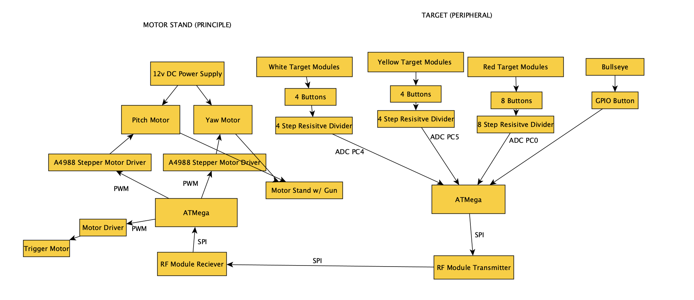
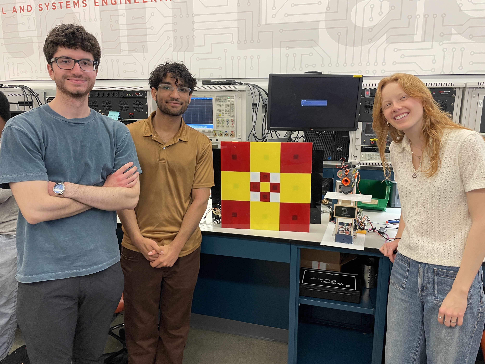

Made by: Matilda Dingemans, Destynn Keuchel, and Ayan Bhatia
AutoAlign is an adaptive targeting system that uses pressure sensor feedback to automatically realign a motor-controlled platform that holds a Nerf blaster toward the center of a target. It consists of two communicating pieces: a Nerf blaster stand that moves up, down, left, and right, and a pressure-sensor-covered target that sends feedback for alignment corrections.  Github Repository Link
We met all our expectations. Some requirements changed — LCD screen use was dropped, RF receive interrupts were added, and requirement precision improved. See below for validations:
| ID | Description | Validation Outcome |
|---|---|---|
| SRS-01 | Button impact detection and ADC signal decoding | All 17 target panels mapped to individual buttons, verified through code and demos |
| SRS-02 | Peripheral ATMega sending button coordinates via RF | RF transmission demonstrated successfully in MVP video |
| SRS-03 | Motor aiming completed within 6 seconds | Demonstrated in video with acceptable motion timing |
| SRS-04 | Trigger mechanism firing every ~7 seconds | Shown in demonstration video |
| SRS-05 | RF receiver triggers interrupt | Implemented using interrupt-driven design |
All hardware requirements were met. Some requirements evolved to improve reliability, including de-noising RF circuits and specifying target launch distances.
| ID | Description | Validation Outcome |
|---|---|---|
| HRS-01 | 17 Buttons on the target module | Validated through demo video and images |
| HRS-02 | Stepper motors for pitch and yaw | Demonstrated in system design |
| HRS-03 | Triggering mechanism using a stepper motor | Stepper rail system shown in demo video |
| HRS-04 | Nerf gun launching projectiles over 8 feet | Shown in Detkin Lab demo video |
| HRS-05 | Noise-reduced RF receiver with capacitors (see below) | Capacitor circuit implementation validated |
This project helped us learn about numerous embedded software systems. Before this, we had never worked with RF modules, nor very much with motors. Some of the previous lab components had some basic motor coding, but this project really got down to the precise movement of the stepper motors we used, which allowed for extreme precision. We also learned about how important ideating is before building. There were multiple times where we implemented ideas and made them partially permanent (such as using super glue) before properly testing them. For example, the first four buttons we put in the target were too low down from the springs, so it made it really difficult for the bullet force to press them in, but they were all superglued in, so we had to break them out using heat and chip off parts of our backing board. If we had used a less permanent seal and then tested, it would have been a lot easier to fix.
The project overall went very well! While there were some longer nights, we got all of our requirements working, and the full loop of the system (as in, fire, hit, move, adjust, repeat) worked really well. While the gun being inaccurate was our main bottleneck, that was out of our control, all of the items we implemented were quite effective. The RF modules worked really well together and sent and received signals very quickly to ensure the movement wasn't delayed for a long time. Another part of the project that went well was the up/down motor system as well as the trigger mechanism. While these both took some ideating, we ultimately had systems that had precise (86 nm) movement, and a trigger mechanism that successfully pushed the bullet into the chamber so it could be fired multiple times in a row without us having to interact with the system at all.
We are most proud of all of our components working together after working separately. We had a good motor stand, a working target module, and RF working, and then when we were able to write code that seamlessly integrated all of them to work in the looping system, it was extremely satisfying. Seeing the bullet hit the top middle target module and move down right to the middle and hit the middle without us interacting with the system at all was very exciting!
We had to significantly change our approach from the original motor stand idea. Originally, the design was very unbalanced, with one motor sitting on top of the other, which prevented precise control and caused torque issues. We then decided to split the motors into two separate modules that sat on the tabletop. Next, we needed to address the challenge of converting rotational motion into up-and-down movement. We decided to use a nut and bolt mechanism, where the bolt was attached to the motor and moved up and down along a stand that the top of the motor sat on. This allowed us to achieve extremely precise vertical movement. Finally, we placed the nose of the gun on a smooth acrylic flat top, allowing it to move left and right easily. We considered adding a wheel to further reduce friction, but the acrylic surface was already sufficiently smooth.
Two things that could have been done differently are using pressure sensors instead of buttons for the target and using a nut and bolt setup for the left and right motor as well, so we could have had the same level of precision for both axes. Pressure sensors would have eliminated some of the issues we had where the bullets did not apply enough force for the buttons to fully press down or did not register because they pressed down too quickly. If we had used pressure sensors, it would have always registered, and we would have had more control over where on the sensor it was hit. In terms of the left-right movement, using a nut and bolt setup would have given us much more control, as the left-right movement we ended up with was somewhat volatile and inconsistent.
One of the main obstacles was the Nerf gun bullets being inconsistent. With a project that relies on precision, we would have wanted to create a system that didn't rely on the bullets firing in random directions. Unfortunately, because the firing direction varied slightly from shot to shot, it made it harder to consistently hit the target, adjust for it, and have it hit exactly where we adjusted it to. While we were able to design the motors and movement system to adjust and compensate as much as possible, the randomness of the bullet paths was something that we couldn't fully control.
In order to remove more of the randomness, we would have wanted a more accurate firing tool. Perhaps we could create our own firing tunnel with servos inside it, making it both more powerful and more accurate. This would help ensure the bullet can push the buttons properly and be more reliable overall. Another possible next step could be adding a vision system, such as a simple camera to detect the exact location of the target and adjust the aim dynamically before firing.
No external libraries were used in this project. We used the uart.c library file provided in prior labs to enable sending of data from the ATMEGA328PB.
We are a team of passionate engineers and innovators.
Destynn (Left) is a junior from Cleveland, Ohio, pursuing a dual major in Computer Engineering and Materials Science and Engineering, and a Masters in Electrical Engineering at the University of Pennsylvania. He enjoys building mechanical and electrical systems.
Ayan (Middle): Ayan Bhatia is studying Electrical Engineering (undergraduate) and Robotics (masters) at the University of Pennsylvania. In his free time he works on engineering build projects ranging from 15 foot wingspan airplanes to creating disability adapted products.
Matilda (Right) is a Computer Engineering major at the University of Pennsylvania with a strong background in embedded systems, mechanical design, and software development. She has experience leading technical projects across electric vehicle construction, entrepreneurship, and scientific research, combining skills in engineering, programming, and problem-solving to bring complex systems to life.
